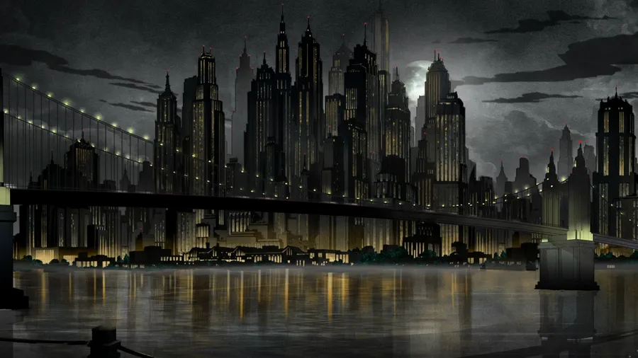

Gotham is a fictional city known for its dark atmosphere, towering skyscrapers, crime-filled streets, and mysterious characters. It is the home of Batman and serves as the central setting for many stories in the DC universe. Gotham represents a city struggling between justice and corruption, where powerful criminals, corrupt officials, and ordinary citizens constantly collide. Despite its darkness, Gotham is also a place of hope, with Batman standing as a symbol of protection and justice. Its gothic architecture, endless nights, dangerous alleys, and unpredictable villains give the city a unique identity. Gotham feels less like a place and more like a character itself.
